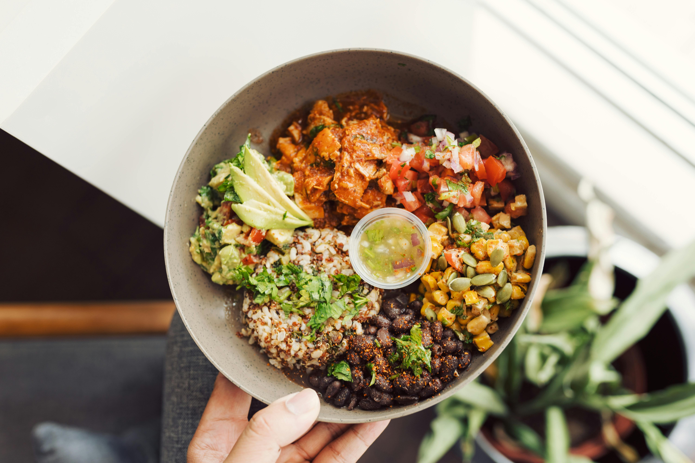

Prep Time
20 mins
Cook Time
30 mins
Total Time
50 mins
Serves
4 bowls
Nutrition Information (per serving)
Calories:
425 kcal
Protein:
15g
Carbohydrates:
58g
Fiber:
12g
Healthy Fats:
18g
Iron:
4.2mg
Ingredients
For the Bowl Base:
- 1 cup quinoa, rinsed
- 2 cups water or vegetable broth
- 1 can (15 oz) chickpeas, drained and rinsed
- 2 cups kale, chopped
- 1 sweet potato, cubed
- 2 cups broccoli florets
- 1 red bell pepper, sliced
- 1 cup cherry tomatoes
- 1 avocado, sliced
- ¼ cup pumpkin seeds
For the Tahini Dressing:
- ¼ cup tahini
- 2 tablespoons lemon juice
- 1 tablespoon maple syrup
- 1 clove garlic, minced
- Water to thin
- Salt and pepper to taste
Seasoning for Vegetables:
- 2 tablespoons olive oil
- 1 teaspoon cumin
- 1 teaspoon paprika
- ½ teaspoon turmeric
- Salt and pepper to taste
Instructions
- Preheat oven to 400°F (200°C). Line two baking sheets with parchment paper.
- Cook quinoa in water or broth according to package instructions. Fluff with fork when done.
- Toss sweet potato, broccoli, and bell pepper with olive oil and seasonings. Spread on baking sheets.
- Roast vegetables for 20-25 minutes, stirring halfway through.
- Meanwhile, prepare the dressing: Whisk together tahini, lemon juice, maple syrup, garlic, and enough water to reach desired consistency.
- Massage kale with a little olive oil and salt until softened.
- Assemble bowls: Start with quinoa base, arrange roasted vegetables, chickpeas, kale, cherry tomatoes, and avocado.
- Drizzle with tahini dressing and sprinkle with pumpkin seeds.
Healthy Eating Tips:
- This bowl is rich in plant-based protein, fiber, and healthy fats
- Meal prep friendly: Prepare components in advance and assemble when ready to eat
- For extra protein, add grilled tofu or tempeh
- Keep dressing separate if preparing in advance
- Customize with seasonal vegetables to maximize nutrients and freshness